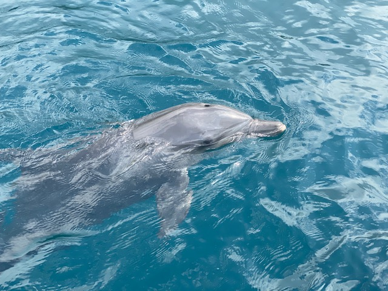

While the COVID-19 pandemic continues to rage throughout the world, Dolphin Project continues to maintain a global presence, acting as a voice on behalf of all dolphins in need.
Umah Lumba Rehabilitation, Release and Retirement Center, Bali, Indonesia
At the Umah Lumba Center, Dolphin Project’s on-the-ground Indonesian team is now focusing on behavioral observations.

Rambo continues to heal and thrive at the Umah Lumba Center, Bali, Indonesia
Says Femke den Haas, Dolphin Project’s Indonesian Campaign Manager, “Rocky, Rambo and Johnny spend their days hunting, chasing fish, and playing and swimming together, while exploring every corner of the depth of the seapen. When they first arrived, they spent approximately 30% of their time underwater, and 70% at the surface, as their attention was still very much on people. Now, it’s the other way around, with 70% of their time spent underwater, doing what they like to do most.”
Continues Femke, “With the help of the team’s underwater camera, we are able to monitor the dolphins from a distance, with minimal interaction. With such observations comes an understanding of each dolphin’s behavior, so their individual needs can be better met. Rocky has developed impressive hunting skills, is very active and is always eager to hunt fish. He is also a great motivator for Rambo and Johnny. Rambo is also able to chase and hunt fish but gives up a little too easy when he has to put in too much effort! However, he is observing how Rocky hunts so his skills are improving. For Johnny, he loves playing, and actively engages in his “chase-a-fish” activity. He too is a great observer and is learning from Rocky and Rambo.
Each of our three rescued dolphins continues to heal, thrive, rehabilitate and learn at the Umah Lumba Center. Our team works around the clock to ensure the Center is in tip-top shape, and the dolphins receive the best, possible care.